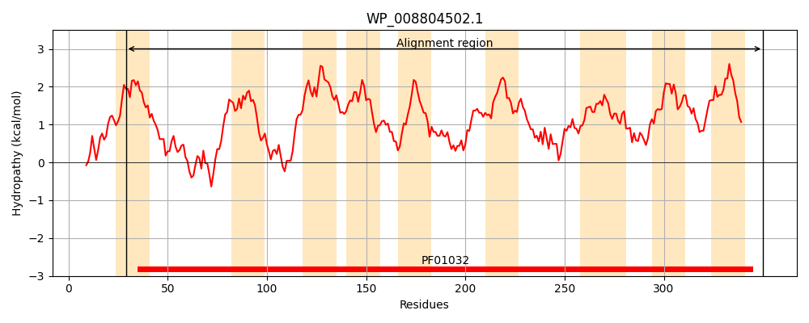
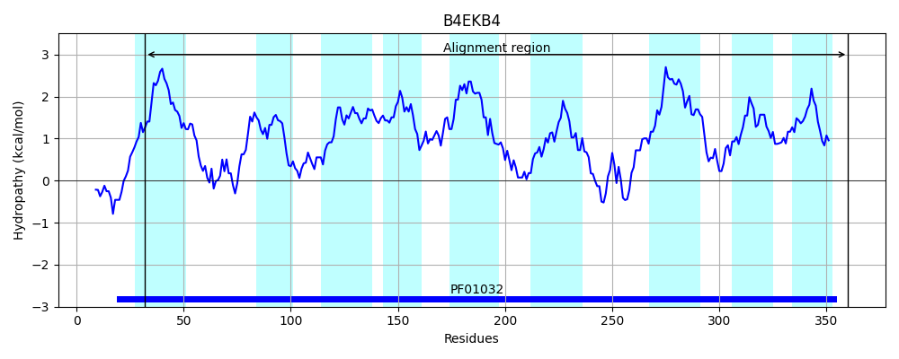
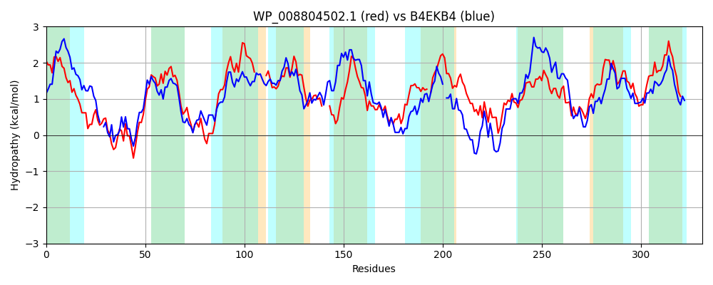

Hit Accession: B4EKB4
Hit TCID: 3.A.1.14.27
Hit Description: gnl|BL_ORD_ID|1871 gnl|TC-DB|B4EKB4|3.A.1.14.27 Putative hemin ABC transport system, membrane protein OS=Burkholderia cenocepacia (strain ATCC BAA-245 / DSM 16553 / LMG 16656 / NCTC 13227 / J2315 / CF5610) OX=216591 GN=hmuU PE=1 SV=1
Mach Len: 331
e:0.000000
Query TMS Count : 9
Hit TMS Count: 9
TMS-Overlap Score: 7.000000
Predicted Substrates:None
BLAST Alignment:
Score: 550 , Bit scores: 216 bits, E-value: 1.2e-67, Alignment length: 331, Percentage identity: 40
Query: 29 IAAIMMLMLLALGLYSLSRGSFPLPASTLARALLAPQDMGEQPRFILFDIRLPRILMALLCGAMLGLAGAAMQSITRNGLADPGLIGVKEGASIVVLALVLFFPAV-----GLVWRPLAGMVGGVAVALLVLTLARDCSR---PRFILIGIGVSWTLAAAVGIFMTTADVRDVQTAMIWLAGSLQAATWPLLA-VAFCWALPGAIILFCTARAADVALLGDRTAIGLGVRLQQLTMLRFFAPVLLTSASVSCVGSLGFVGLMAPHMARFVLRGGQVSLLCGSALIGALLVLVTDTLGRLAFAPLQIPAGIVIALVGCPFFVVLLWRRRDAL 350
+ A + +++ A+ + +L G++ +P + A A L+ +Q R +L DIR PR+++ALL G G GAAMQ++ RN LADPGL+GV GA++ L++ PA+ P+A GG+AVA LV LA R P +L GI ++ + AA+G+ AD +++ W GSL A WP LA VA C AL G ++L A + LG+ A+ LGV +Q+L A L A VSC G +GF+GL+APH R Q +L G+AL+GALL L D R AP IP G++ AL+G PFF+ LLW+ R AL
Sbjct: 32 VLAALAILMGAMSVVALCVGAYRIPLAE-AWAALSGDPAAQQARAVLLDIRAPRVVLALLVGGGFGATGAAMQALFRNPLADPGLVGVSSGAALGATTLIVLGPALFAAHASAAALPVAAFAGGLAVAALVYRLAASRGRLALPLLLLAGIAINALVGAAIGLLTFVADDAQLRSLTFWSLGSLGGAQWPTLAAVAPCVAL-GGVLLVRERDALNALQLGETEALHLGVPVQRLKRRVLVAVALAVGALVSCAGIIGFIGLVAPHCVRLACGPDQRIVLPGAALLGALLTLAADLAARTVAAPADIPLGVLTALLGAPFFLALLWKNRGAL 360 | Protein Hydropathy Plots: |
|---|
|  |  |
Pairwise Alignment-Hydropathy Plot:
|
|---|
|  |